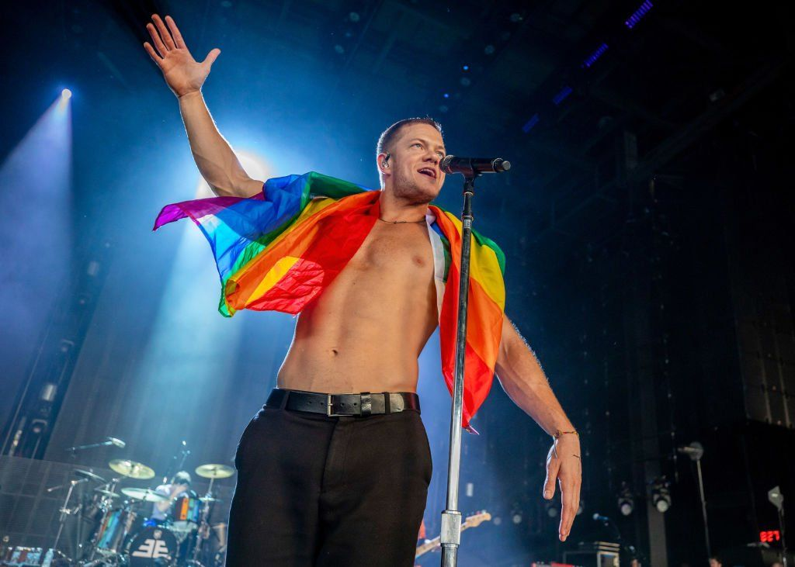
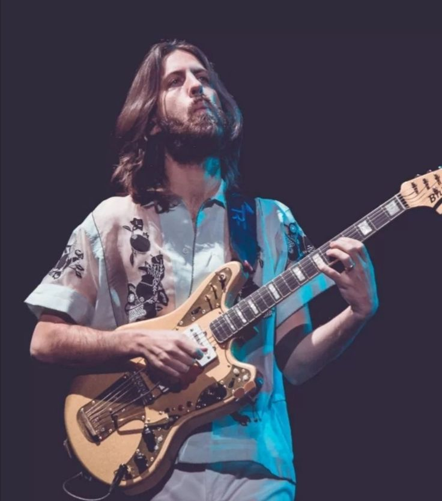
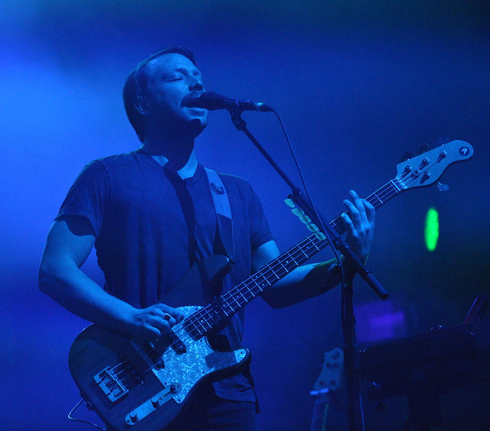
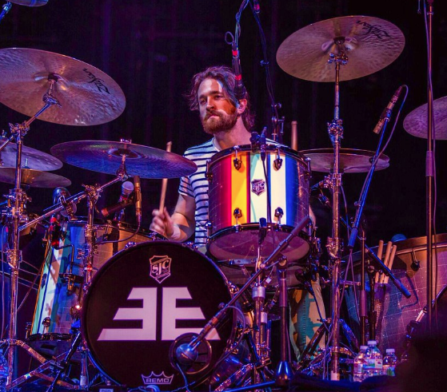
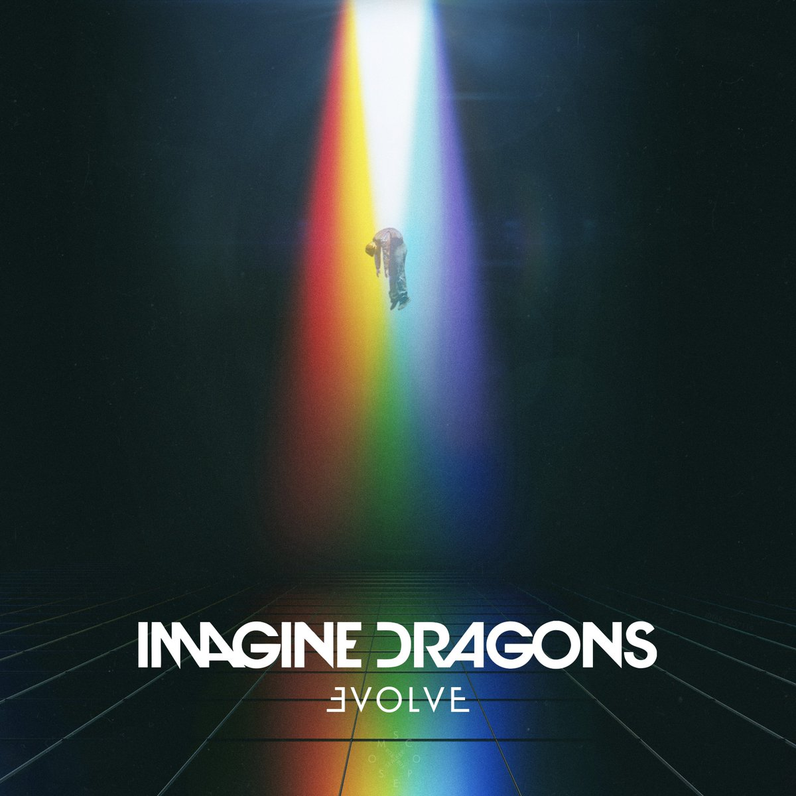
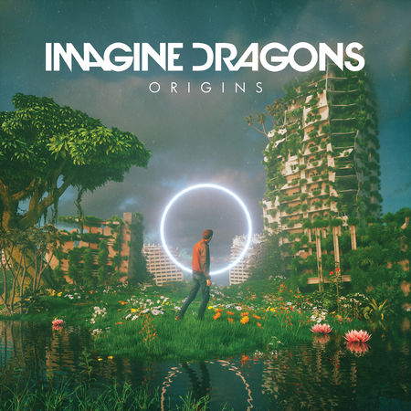

Informatie
Imagine Dragons is een band opgericht in 2008 in Las Vegas. Ze hebben ondertussen al verschillende
albums en treden op over de hele wereld.
Er is maar 1 lid sinds het begin (
Dan Reynolds
) en de rest is weggegaan of nieuw bijgekomen.
Oud-leden
- Aurora Florence - piano, keyboards, achtergrondzang, viool (2008)
- Andrew Beck - gitaar, achtergrondzang (2008)
- Dave Lemke bas, achtergrondzang (2008 - 2009)
- Andrew Tolman - drums, percussie, achtergrondzang, gitaar
(2008 - 2011) - Brittany Tolman - piano, keyboards, achtergrondzang, gitaar
(2009 - 2011) - Theresa Flaminio - piano, keyboards, achtergrondzang (2011)
Bijgekomen:
- Elektrische gitaar Wayne Sermon (vanaf 2009)
- Basgitaar Ben McKee (vanaf 2009)
- Drums/Viool Daniel Platzman (vanaf 2011)
Ze spelen verschillende genres:
- Indierock
- Alternatieve rock
- Pop
"Biografie"
In 2008 ontmoetten zanger Dan Reynolds en drummer Andrew Tolman, toen nog studenten, elkaar op het
Brigham Young University in Utah. Samen met Andrew Beck, Dave Lemke en Aurora Florence werd de band
Imagine Dragons opgericht. De naam Imagine Dragons is een
ANAGRAM DIE TOT OP HET HEDEN NIET BEKEND IS.
Later in 2008 werd de ep Speak to Me uitgebracht. Beck en Florence verlieten de band en werden
vervangen door Tolmans vrouw Brittany Tolman en schoolvriend
Wayne Sermon. Na het vertrek van Lemke werd bassist
Ben McKee
aan de band toegevoegd.
De groep ging zich vestigen in Las Vegas, geboorteplaats van Reynolds. In Las Vegas werden nog drie
ep's gemaakt: Imagine Dragons, Hell and Silence en It's Time.
De band kreeg bekendheid door het geven van vele optredens in Las Vegas.
In november 2011 tekende de band een platencontract bij Interscope Records en ging het samenwerken
met kygo.
Andrew en Brittany Tolman verlieten de band en Daniel
Platzman Daniel Platzman werd de nieuwe drummer van Imagine Dragons. Hiermee was de formatie
compleet.
Leden van het heden
-
Dan Reynolds

Hij is de hoofdzanger en pianist van de band Imagine Dragons.
Hij is er al van de start van de band en heeft deze opgericht.
Zanger/Drums/Gitaar Dan Reynolds (vanaf 2008)
-
Wayne Sermon

Hij is de bassist van de band Imagine Dragons.
Hij is erbij gekomen in 2009.
-
Ben McKee

Hij is de elektrische gitarist van de band Imagine Dragons.
Hij is erbij gekomen in 2011.
-
Daniel Platzman

Hij is de drummer/violist van de band Imagine Dragons.
Hij is erbij gekomen in 2011.
Discografie
Albums
-
Night Visions
(4 september 2012).Zorgde voor de wereldwijde doorbraak met "Radioactive" op de promocampagne van Assassins Creed III en met "On Top Of
The World" in de game FIFA 13.
Smoke + Mirrors
(17 februari 2015).De nummers werden gebruikt in allerlei films zoals Transformers: Age of Extinction en in de wereldberoemde game "league Of Legends".

Evolve
(23 juni 2017).Op 21 februari 2018 werd er een heruitgave van Evolve uitgegeven met de nieuwe single Next to Me.
Origins
(9 november 2018).Volgens Dan Reynolds ligt het album in het verlengde van Evolve.
Mercury Act 1
(3 september 2021).De single Enemy uit 2021 werd toegevoegd als extra nummer. De derde single is geïnspireerd door de dood van Reynolds' schoonzus.

Mercury Act 2
(1 juli 2022)Het album is een onderdeel van het verzamelalbum Mercury - Acts 1 & 2, bestaande uit beide Mercury albums.

-
Night Visions Anniversary Edition
(9 september 2022).Het album is Night Visions is opnieuw uitgebracht ter gelegenheid van het 10-jarige jubileum ervan. Het album kwam met een paar nieuwe songs.